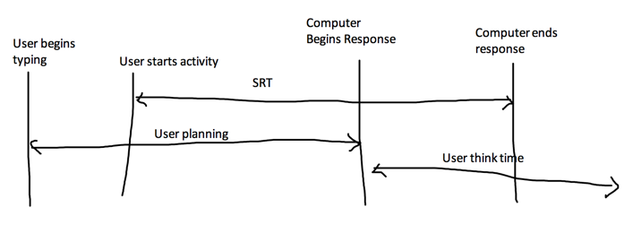

Week 11 - Day 1
Navigate using audio
Announcements
- Class next Tuesday is for meeting with your group
- Project part C due that day
Timely user interfaces
Difference Between Quick and Long Response
- Long delays
- Negative
- users forget
- Positive
- make less mistakes to avoid wait times
- Negative
- Short delays
- Negative
- More error prone
- Users might become rushed
- Perceived less error because of quick response time
- More error prone
- Positive
- users can learn
- keep users’ attention
- Negative
SRT
- Audio 0:07:49.928513
- system response time - number of seconds between a user’s activity to the display of the results
- model
- 
- Audio 0:13:48.149731
- You want to maximize the SRT time
- This means moving the computer begins output line as far left as possible
- Means displaying spinning wheel or whatever to let the user know information is being processed
Rapid Task Performance, Low Error Rate, High Satisfaction
- Audio 0:16:27.172385
- What is needed for this
- user knowledge
- ease of navigation
- solutions can be carried out without delays
- distractions eliminated
- anxiety low
- Audio 0:19:12.712080
- Avoiding or handling errors
- user knowledge
- accurate feedback
- avoid or handle errors
- Audio 0:22:21.264087
- There are actually times you might want to slow down your interface
- For novices especially
User Productivity and Variability
- Audio 0:24:39.577520
- Repetitive tasks
- Menial tasks
- If the system response time is different every time, it will confuse users
- Short response will make them respond more quickly which could be good or bad
- Menial tasks
- Users adapt to the response time
- If the response time changes, users will change their work style
- People like predictability
Frustration Reduction
- Audio 0:27:42.154803
- SRT should match expectations
- If I move the mouse, it should move
- If I’m doing something more complicated, it’s okay if it takes a long time
- Reduce interruptions
- Make sure the interface doesn’t fail
- Show progress
- Make sure it’s accurate
- Improve training
- Increase capacity
- Upload speed
- Response time
Guidelines
- Audio 0:35:33.221472
- People prefer shorter response times
- SRT < 15 seconds
- Shorter response time = shorter think time
- error rates
- SRT should be appropriate for the task
- Typing, mouse, etc should be < 15 ms
- Complex tasks
- 2 - 4 seconds
- Very complex
- < 15 seconds
- Rapid startups
- If it takes too long to load, people might go somewhere else
User Experience With Data Latency
- Audio 0:40:16.662149
Vocab
| Term | Definition |
|---|---|
| short delay positives | users learn better and their attention is kept better |
| long delays negative | users forget what they’re doing |
| long delays positive | users make less mistakes |
| short delays negative | users are more error prone |
| system response time (SRT) | number of seconds between a user’s activity to the display of the results |
| characteristics needed for rapid task performance, low error rate, and high satisfaction | user knowledge of the task, ease of navigation, solutions have low delay, user has low anxiety, give accurate feedback, avoid or handle errors |
| what can we do to reduce frustration? | Match SRT with expectations, reduce interruptions, prevent errors, keep SRT < 5 seconds, show progress, feedback, improve training, increase capacity |
| response time guidelines | people prefer shorter response times, SRT < 15 sec, SRT should be appropriate for task, rapid load |